Protagonist
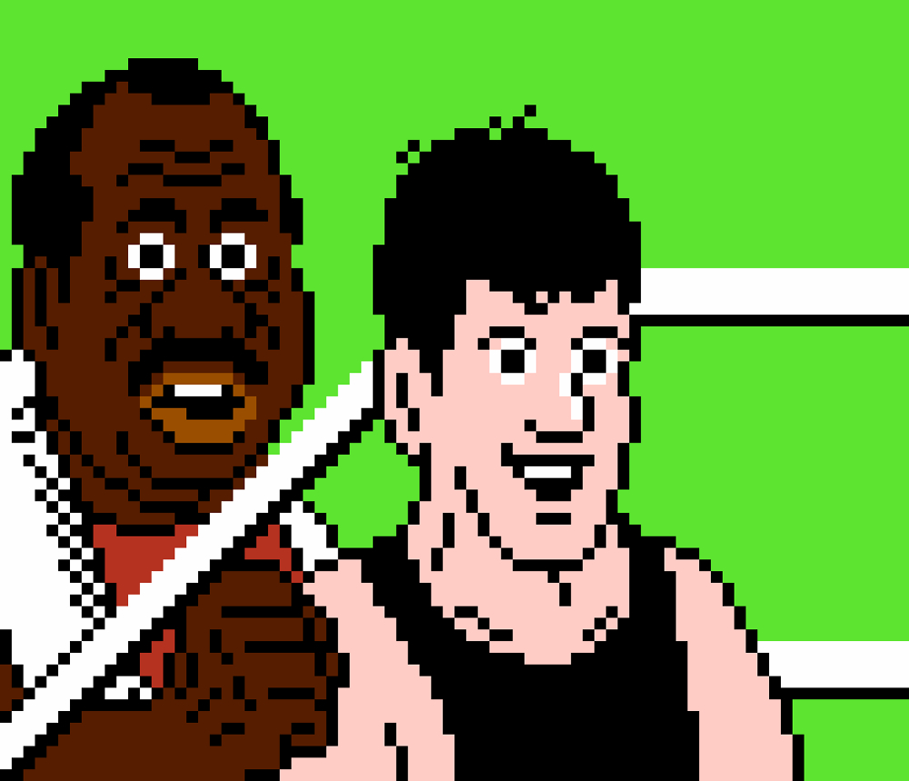
Little Mac is the underdog protagonist who serves as the player-controlled boxer.
Profile: 0–0 (0 KO) | From Bronx, N.Y. | Age: 17 | Weight: 107
The Coach: Doc Louis is a former heavyweight boxing champion and Little Mac's trainer, who stands in Mac's corner during fight. Between rounds, Doc provides Mac with advice, encouragement, or sometimes a humorous anecdote.
Opponents
Minor Circuit
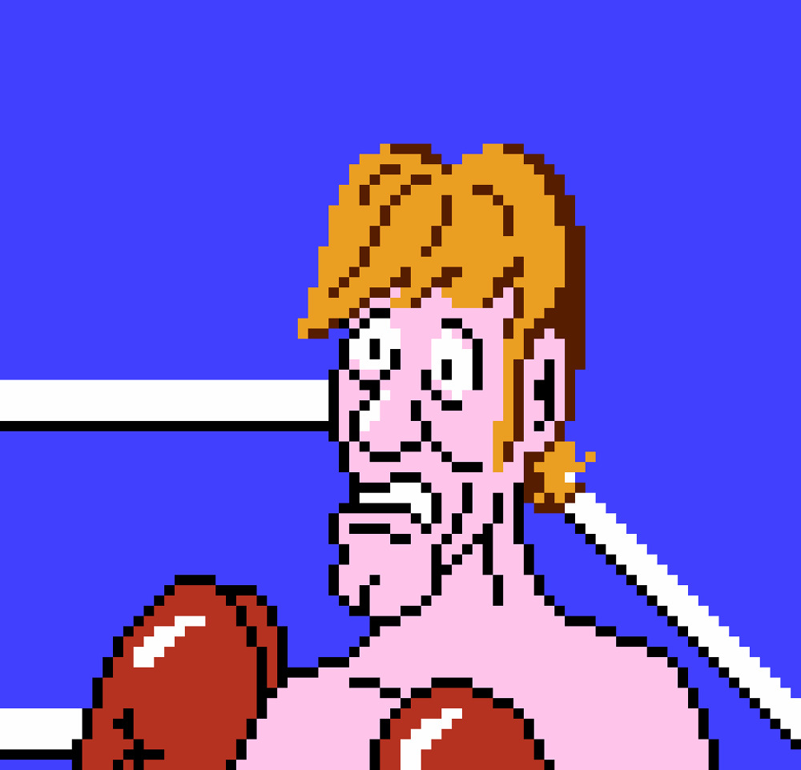
Glass Joe (Ranked: #2) is extremely weak and has very poor defense. He is mostly in the game for players to learn how to use punches, avoid attacks, and to soften up the experience since even though he towers over them, he's still a really easy fighter to beat.
Profile: 1–99 (1 KO) | From Paris, France | Age: 38 | Weight: 110
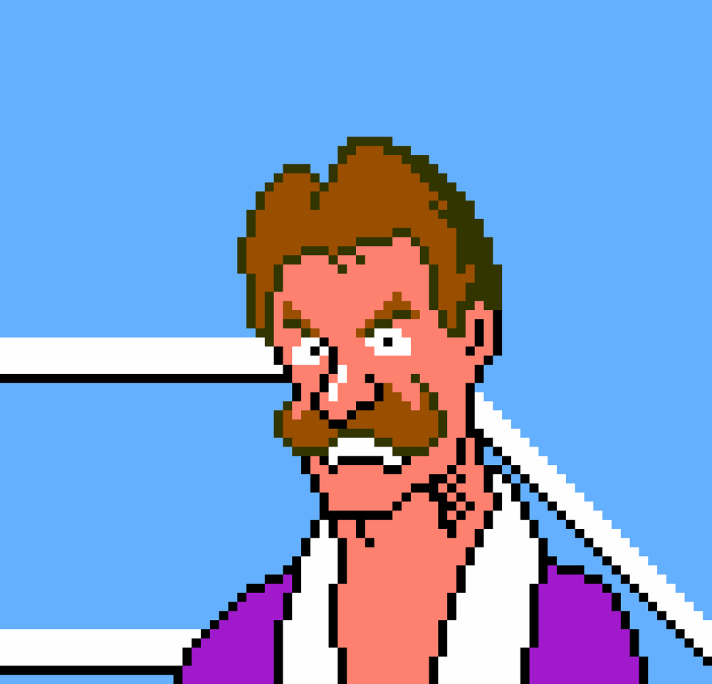
Von Kaiser (Ranked: #1) has punches that are noticeably faster than Glass Joe's and his defenses are much better, along with the fact that his punches do much more damage.
Profile: 23–13 (10 KO) | From Berlin, Germany | Age: 42 | Weight: 144
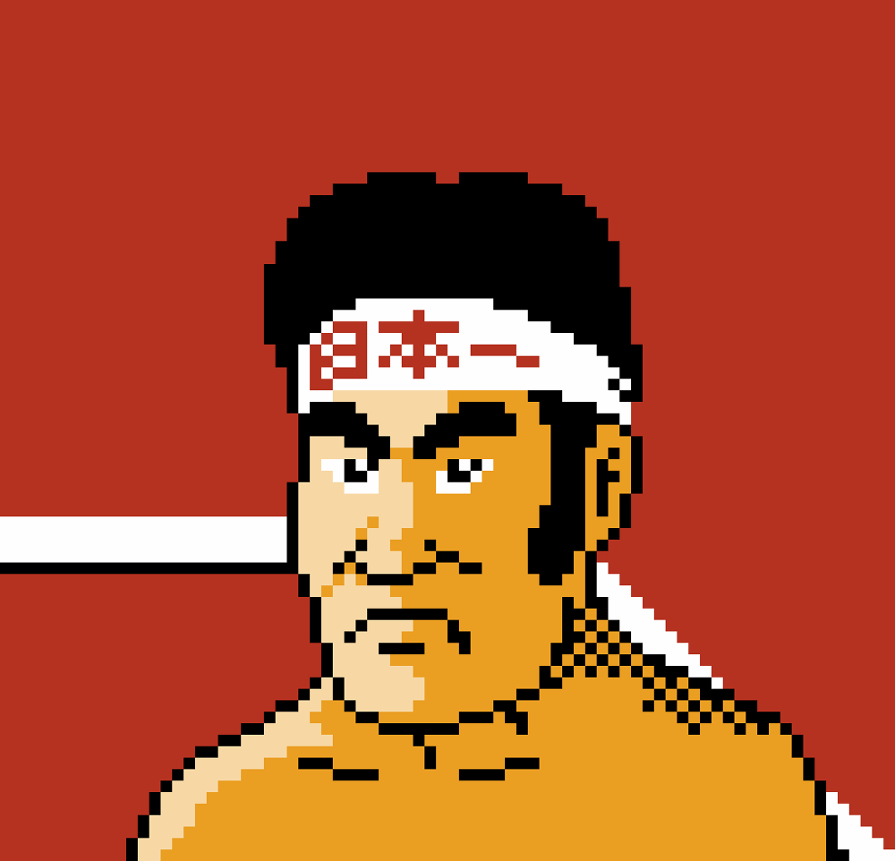
Piston Honda (Champion) has a weak defense but is much improved when compared to Glass Joe or Von Kaiser. His jab and uppercuts hit hard, and he has a series of rotating left and right jabs called the "Piston Punch".
Profile: 26–1 (18 KO) | From Tokyo, Japan | Age: 28 | Weight: 174
Major Circuit
Pass Key
005 737 5423
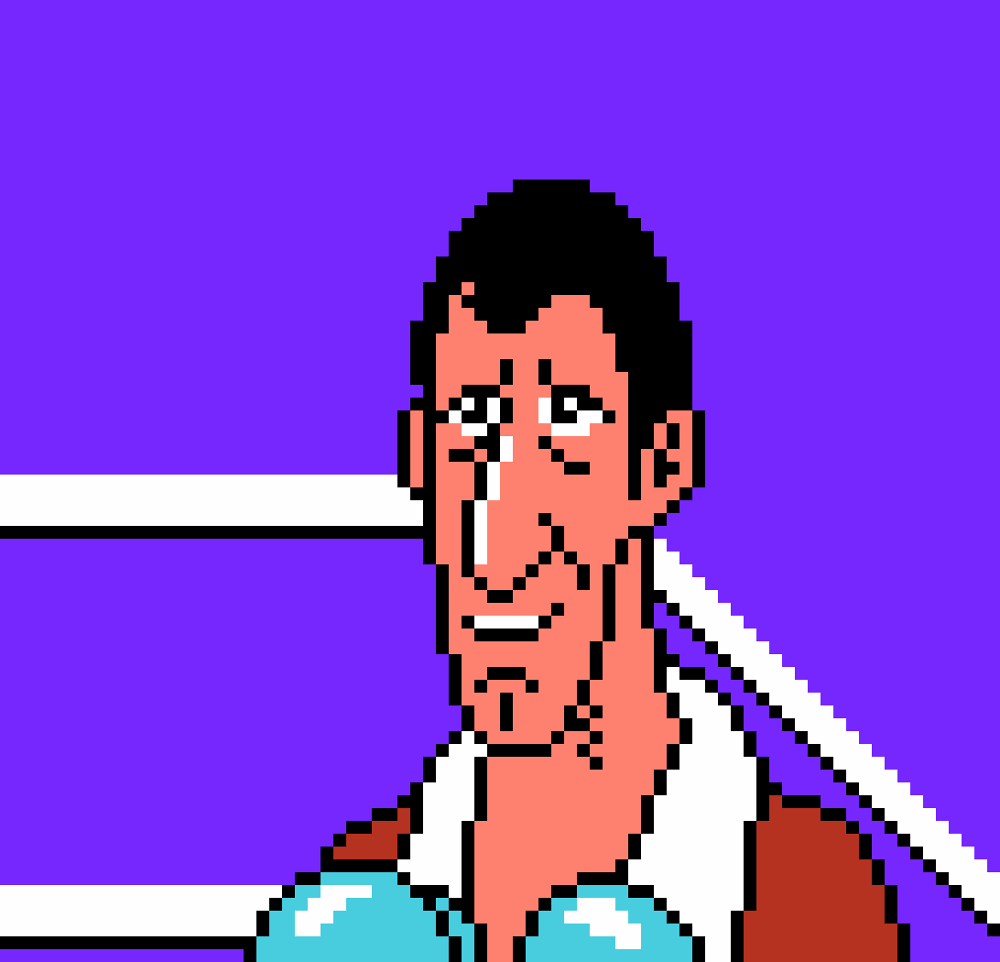
Don Flamenco (Ranked: #3) tauntingly persuades Mac into punching him. When Mac does, Flamenco unleashes his large uppercut (called the "Flamenco Punch").
Profile: 22–3 (9 KO) | From Madrid, Spain | Age: 23 | Weight: 152
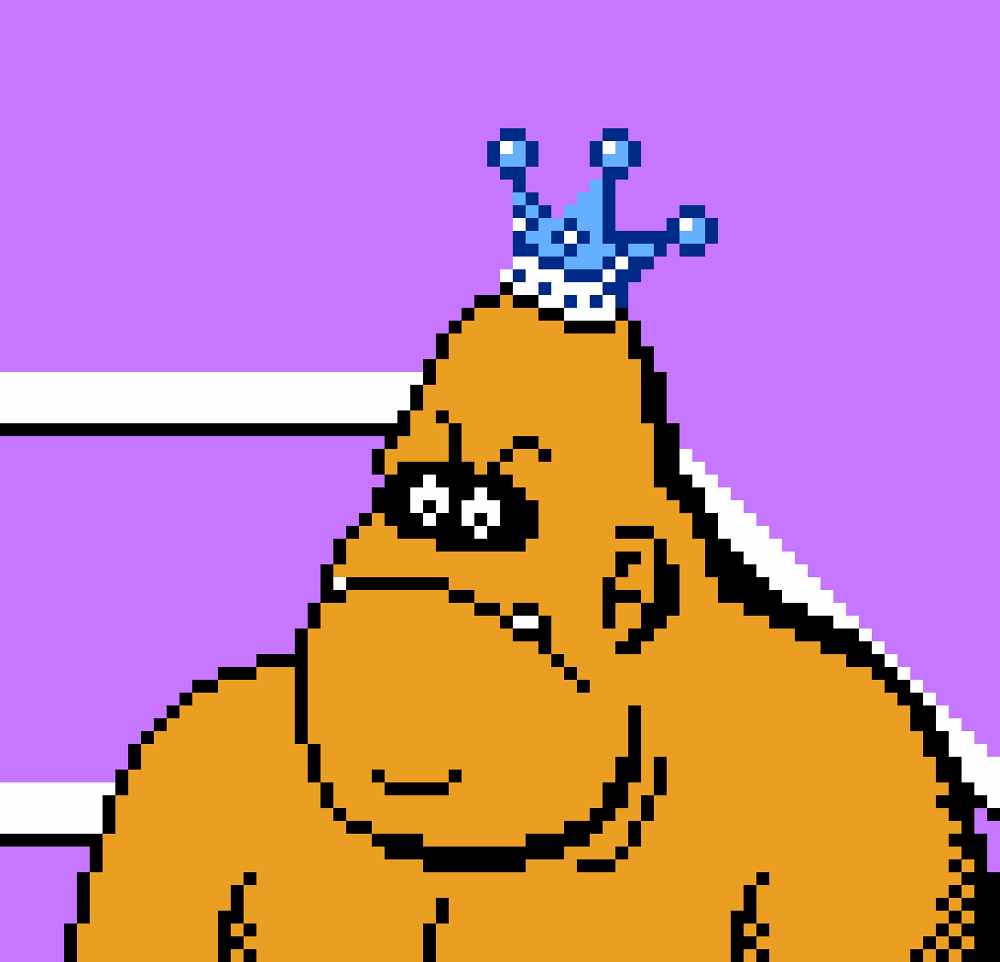
King Hippo's (Ranked: #2) defense is impenetrable until he opens his mouth. When his mouth is hit, Hippo reveals his one weakness: his overly large trunks start falling down, and he has to keep pulling them up whilst trying to fend off Little Mac's body blows.
Profile: 18–9 (18 KO) | From Hippo Island, South Pacific | Age: ?? | Weight: ???
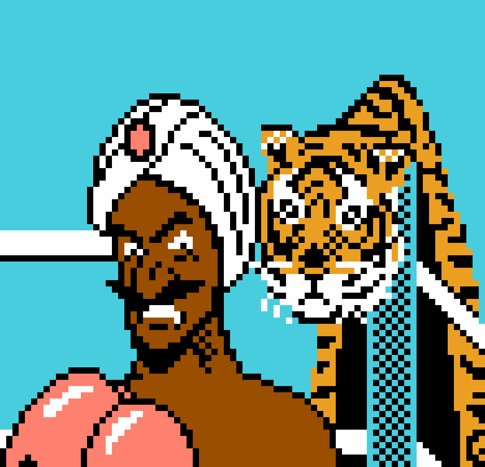
Great Tiger's (Ranked: #1) Tiger (Magic) Punch seemingly uses powers to teleport flying around the ring in circles hitting Mac with a barrage of quick jabs. After executing the maneuver he is unable to move due to the dizziness from his flying for several seconds.
Profile: 24–5 (3 KO) | From Bombay, India | Age: 29 | Weight: 132
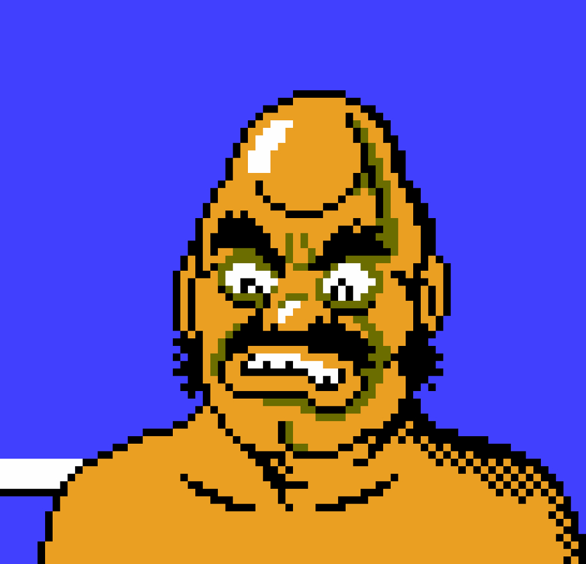
Bald Bull (Champion) is most famous for his special move: now called the "Bull Charge," in which he backs up several steps and then charges forward at an alarming rate, delivering a fast powerful uppercut.
Profile: 34–4 (29 KO) | From Instanbul, Turkey | Age: 36 | Weight: 298
World Circuit
Pass Key
777 807 3454
Piston Honda (Ranked: #5) returns in the World Circuit as ranked #5 for a rematch. He is much more aggressive than he was in the Minor Circuit and has new moves as well as an improved version of his Piston Punch.
Profile: 26–2 (18 KO) | From Tokyo, Japan | Age: 28 | Weight: 174
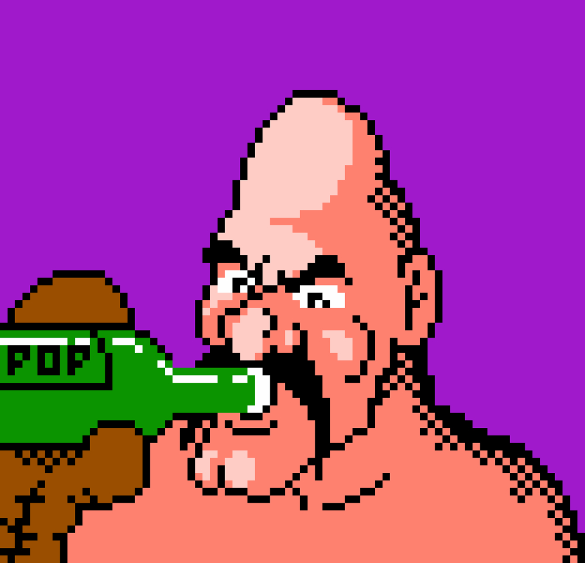
Soda Popinski (Ranked: #4) throws massive uppercuts, quick hooks, sporadic jabs, which have no warning that they're coming before being unleashed, and his signature move the trotting triple jab.
Profile: 33–2 (24 KO) | From Moscow, U.S.S.R. | Age: 35 | Weight: 237
Bald Bull (Ranked: #3) returns in the World Circuit as ranked #3 for a rematch. This time Bald Bull is more aggressive and can be knocked down only by an uppercut or a Bull Charge counter.
Profile: 34–5 (29 KO) | From Instanbul, Turkey | Age: 36 | Weight: 298
Don Flamenco (Ranked: #2) returns in the World Circuit and appears with white shorts and boots with green boxing gloves as the #2 ranked opponent and now has additional techniques.
Profile: 22–4 (9 KO) | From Madrid, Spain | Age: 23 | Weight: 152
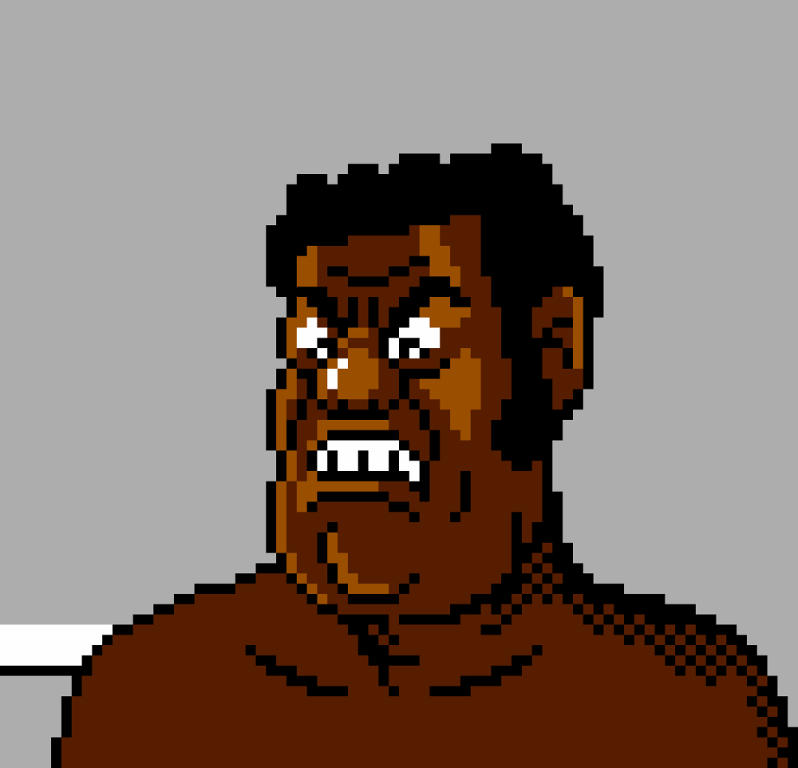
Mr. Sandman (Ranked: #1) has the ability to guard himself whilst stunned and possesses unpredictable punching behavior. He uses his signature special attack called the "Razor Uppercut," in which he swiftly unleashes three uppercuts in a row that are much quicker and stronger than his usual uppercuts.
Profile: 27–2 (21 KO) | From Philadelphia, PA | Age: 31 | Weight: 284
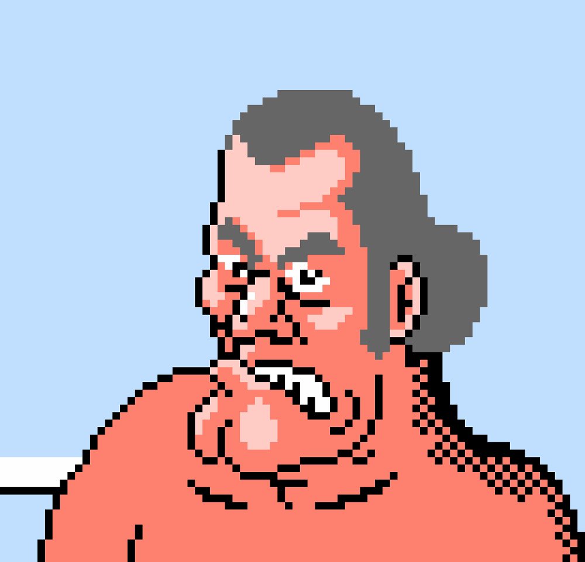
Super Macho Man (Champion) will spin around several times in a row when he does his Super Spin Punch. He will begin to dodge uppercuts even when stunned if he has been hit by enough of them.
Profile: 35–0 (29 KO) | From Hollywood, CA | Age: 27 | Weight: 242
"The Dream Fight"
Pass Key
007 373 5963
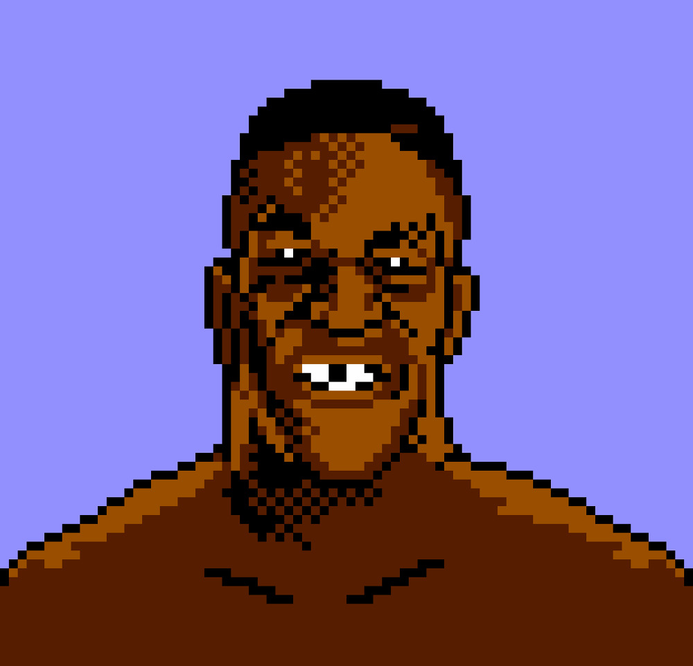
Mike Tyson is the final opponent of the game and is considered one of the most challenging opponents in the Punch-Out!! series whom Little Mac faces in a bout called The Dream Fight.
Profile: 31–0 (27 KO) | From Catskill, N.Y. | Age: 21 | Weight: 220